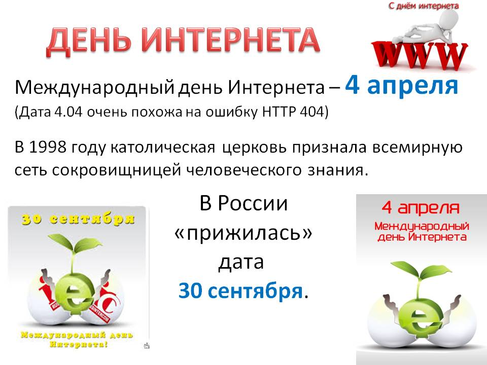

Интернет в нашей жизни
Сейчас Internet - глобальная компьютерная сеть, охватывающая весь мир. Internet имеет около 15 миллионов абонентов в более чем 150 странах мира. Ежемесячно размер сети увеличивается на 7-10%. Internet образует как бы ядро, обеспечивающее связь различных информационных сетей, принадлежащих различным учреждениям во всем мире, одна с другой. Если ранее сеть использовалась исключительно в качестве среды передачи файлов и сообщений электронной почты, то сегодня решаются более сложные задачи распределенного доступа к ресурсам. Около двух лет назад были созданы оболочки, поддерживающие функции сетевого поиска и доступа к распределенным информационным ресурсам, электронным архивам. Они рассматривают глобальную сеть как дополнение к своим собственным локальным сетям.Сегодня уже сложно представить жизнь без сети Internet. Она выполняет множество полезных функций для пользователей, и вот лишь некоторые из них:
- удобство в поиске информации любого уровня - будь то новейшие научные открытия или просто прогноз погоды на завтра;
- большое значение для общения: создается и развивается множество социальных сетей, различные чаты, форумы, блоги;
- упрощается система передачи информационных данных с одного компьютера на другой, в любую точку мира;
- возможность вести переписку через электронную почту;
- быстрота поиска и отбора необходимой информации;
- возможность общения с людьми из разных стран;
- онлайн-обучение;
- интернет-магазины и многое другое.
В 1998 году Римский Папа санкционировал Всемирный день интернета. Официальный святой покровитель пока не объявлен, но по умолчанию им считают Исидора Севильского, испанского епископа 6-7 веков, первого энциклопедиста, и отмечают этот знаменательный праздник 4 апреля, в день вознесения Исидора.Правда, каждая страна назначила свой собственный День интернета. В России таких дня целых аж два. День рождения Рунета отмечают 7 апреля.
Сложно переоценить влияние сети Internet на нашу жизнь. Об открывшихся новых возможностях можно говорить бесконечно, однако нельзя выделить главного значения сети, поскольку каждый пользователь Internet выбирает для себя приоритетными те функции, которыми он использует наиболее часто. К примеру, мне сеть Internet помогла в поиске материалов для данной работы.